İçeri aktar
Yüzlerce ekran görüntüsünü tek seferde seç ya da her uygulamadan bir bağlantı paylaş. Laterland her birini iPhone'unda okur.
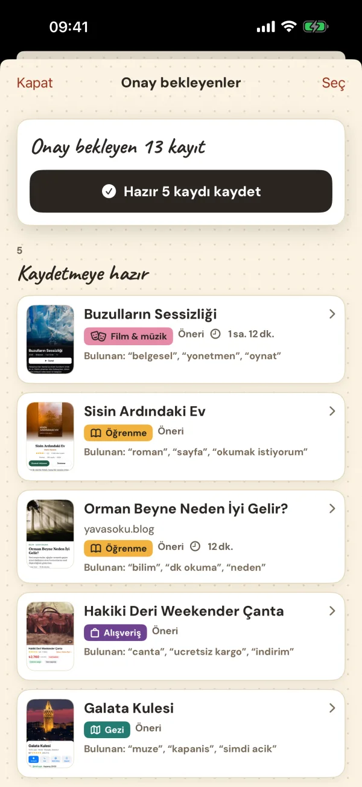
Laterland “bir gün” diye kaydettiğin ekran görüntülerini okur, amacına göre ayırır ve her gün bir fikir sunar. Yap, adan büyüsün.
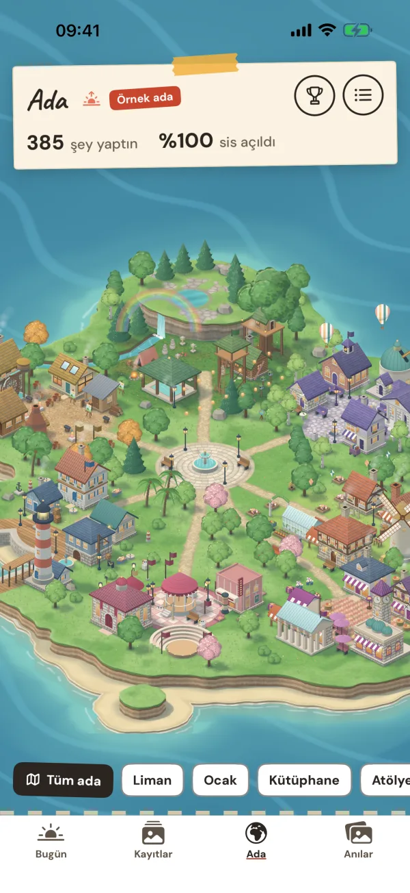
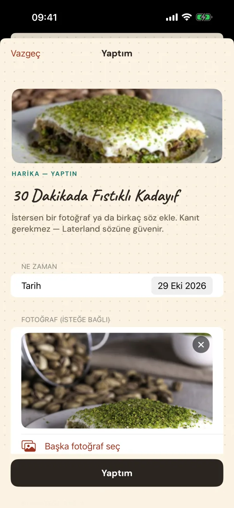
Tarifler, mekânlar, kıyafetler, yazılar, antrenmanlar. Hepimiz “sonra” diye kaydediyoruz. O “sonra” hiç gelmiyor ve galeride kayboluyorlar. Laterland onlara ikinci bir hayat veriyor: gerçekten yaptığın şeyler olarak.
Sıkıcı kısmı Laterland yapar, sen güzel kısma geçersin.
Yüzlerce ekran görüntüsünü tek seferde seç ya da her uygulamadan bir bağlantı paylaş. Laterland her birini iPhone'unda okur.

Bugün ekranı kendi yığınından bir fikir çeker. Bir güne planla ya da kaydır, yenisi gelsin.
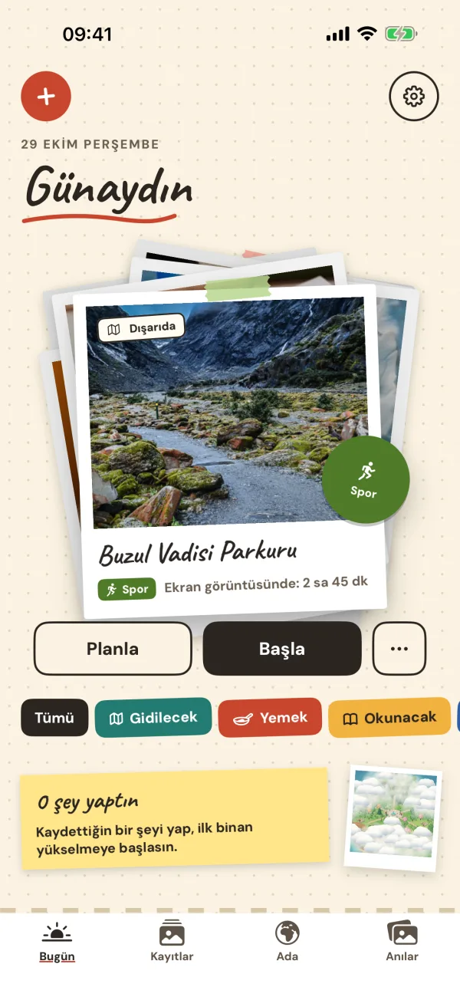
“Yaptım”a dokun. Kanıt gerekmez. Adandaki bir bina bir kat yükselir.
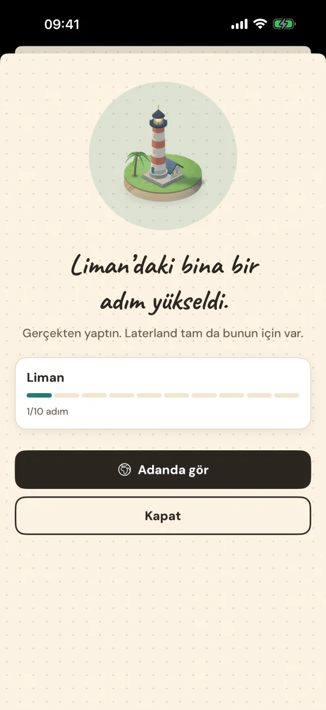
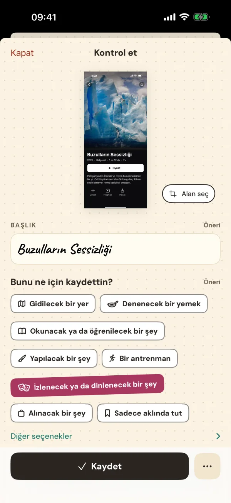
Laterland, Apple'ın cihaz üzerinde çalışan metin tanımasıyla her ekran görüntüsünü anlar: ne olduğunu, nerede olduğunu ve ne kadar süreceğini.
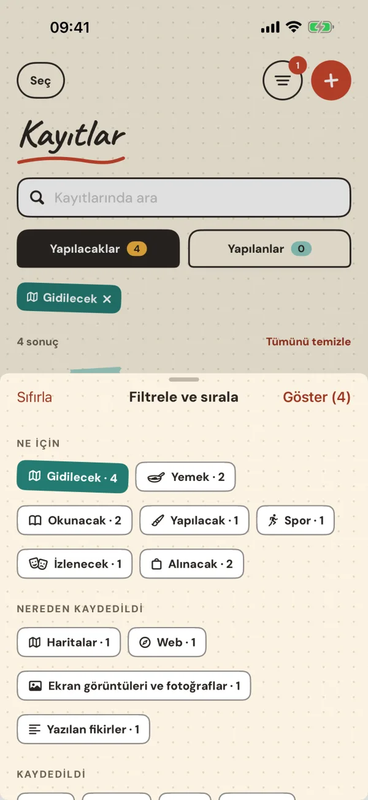
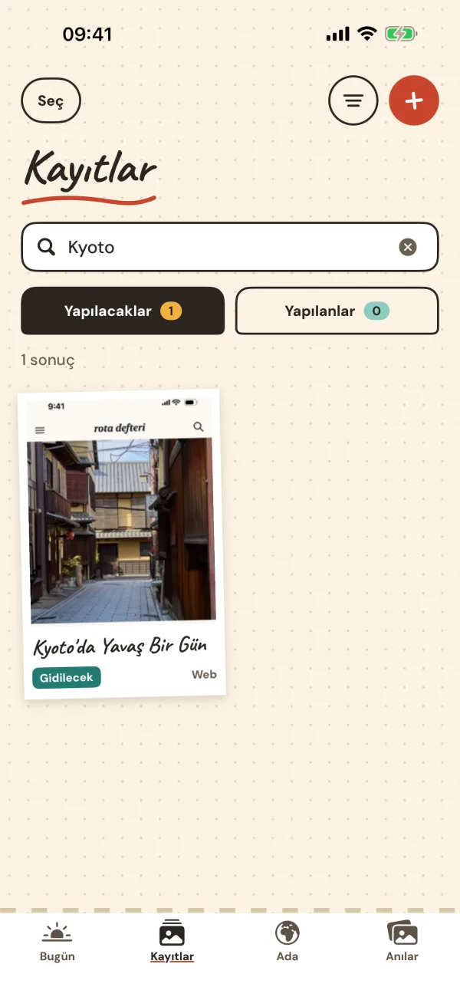
Gidilecek, yemek, okunacak, yapılacak. Aradığın ekran görüntüsünü saniyeler içinde bul: ara ya da amaca, geldiği uygulamaya ve tarihe göre filtrele.
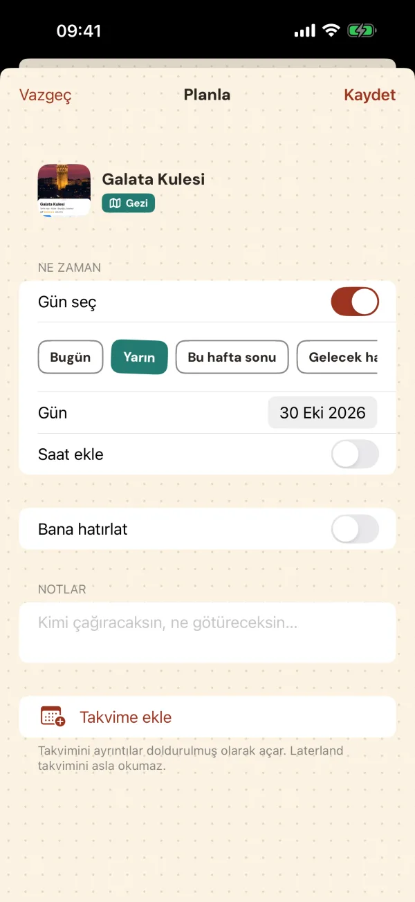
Bir kaydı tek dokunuşla plana çevir. Hatırlatıcı ekle ya da takvimine koy. Yaptığında anı bir fotoğraf ve notla sakla.
Yaptığın her gerçek şey bir binayı yükseltir. Kararların sisi dağıtır. Akşam olunca ışıklar yanar. Liman'dan Tiyatro'ya yedi mahalle adım adım simge yapılara dönüşür.
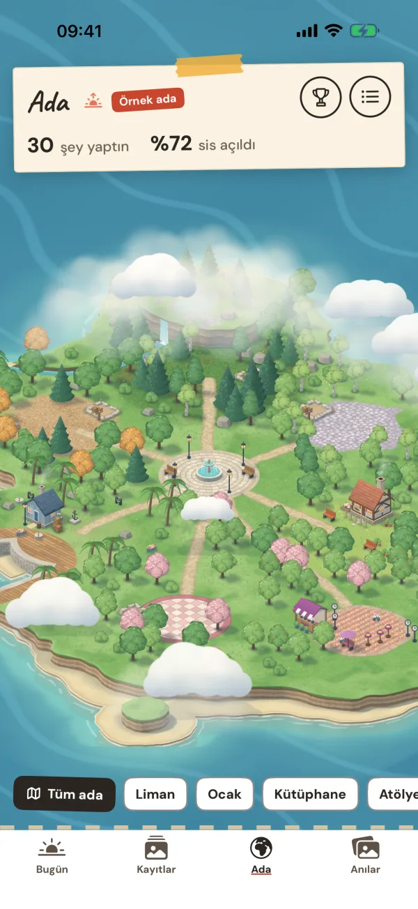
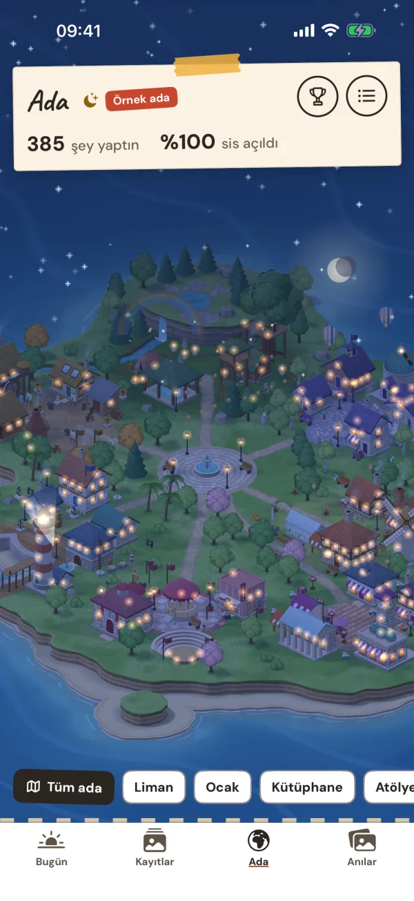
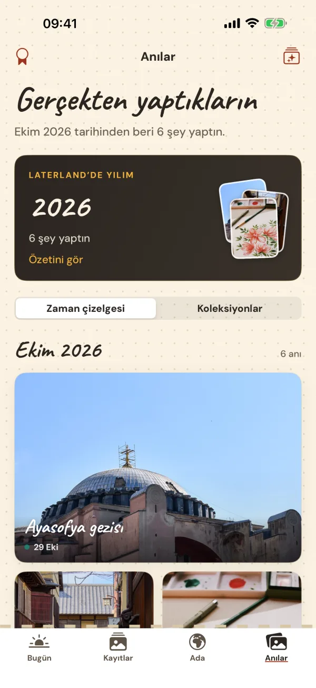
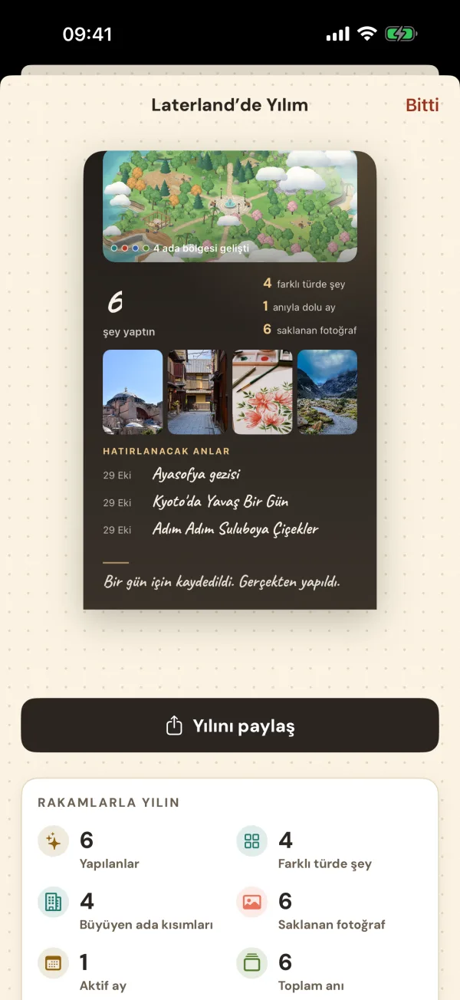
Tamamladığın her şey fotoğrafın ve notlarınla bir anı kartına dönüşür. Yıl sonunda Laterland'deki yılına dönüp bak ve paylaş.
Hesap yok. Reklam yok. Takip yok. Laterland'in verilerini gönderebileceği bir sunucusu bile yok. Gizlilik politikasını oku →
Kayıtlar, ekran görüntüleri, fotoğraflar ve ilerleme yalnızca cihazında saklanır.
Üye olacak, giriş yapacak hiçbir şey yok.
Analiz yok, reklam SDK'sı yok, veri simsarı yok. Asla.
Dosyalar'da ya da iCloud Drive'da sakladığın tek bir dosya.
Laterland iPhone'unun dilini izler ve şu dillerin hepsinde ekran görüntüsü okur:
Laterland App Store'da tek seferlik satın alınır. Abonelik, reklam ve uygulama içi satın alma yok. Tüm özellikler dahil.
Hayır. Ekran görüntüleri Apple'ın cihaz üzerinde çalışan metin tanımasıyla iPhone'unda okunur. Laterland'in sunucusu da hesabı da yok.
iOS 18 veya üzeri yüklü iPhone'larda.
Hayır. Seri, sayaç ya da kaybedilecek bir şey yok. Ada sadece sen bir şey yaptıkça, kendi hızında büyür.
Ayarlar'dan bir yedek al, iCloud Drive'da ya da Dosyalar'da sakla ve yeni iPhone'unda geri yükle.
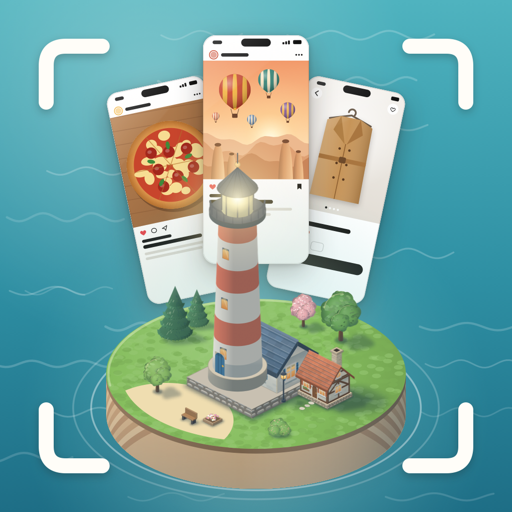
Yapılacaklar listen zaten telefonunda. Laterland onu yaşamana yardım eder.
App Store'daÇok yakında